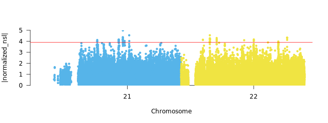

Output
Betascan Results (Balancing Selection)
Results are saved in results/plots/betascan/Human/YRI/m_0.15/YRI.b1.top.0.0005.candidates.scores.
SNP CHR BP B1
22:22350476 22 22350476 29.950265
22:22350435 22 22350435 29.8842
22:22350418 22 22350418 29.332644
22:22350419 22 22350419 29.332644
22:22350497 22 22350497 29.327195
| column | Description |
|---|---|
| SNP | SNP identifier in format chromosome:position |
| CHR | Chromosome number |
| BP | Base pair position |
| B1 | Beta1 statistic for balancing selection |
Higher B1 values suggests stronger evidence for balancing selection of loci where multiple alleles are maintained in the population over long periods.

Selscan Results (Positive Selection)
Results are saved in results/plots/selscan/Human/1pop/YRI/nsl_0.05/YRI.normalized.nsl.top.0.0005.candidates.scores.
SNP CHR BP normalized_nsl abs_normalized_nsl
21:27635622 21 27635622 4.98329 4.98329
22:19879946 22 19879946 4.5454 4.5454
21:29707889 21 29707889 4.54516 4.54516
21:27617315 21 27617315 4.37302 4.37302
21:27642578 21 27642578 4.33443 4.33443
| column | Description |
|---|---|
| SNP | SNP identifier in format chromosome:position |
| CHR | Chromosome number |
| BP | Base pair position |
| normalized_{method} | Normalized selection statistic (iHS, nSL, XP-EHH, XP-nSL) |
High scores indicate recent positive selection where beneficial alleles rapidly increased in frequency. With iHS, nSL statistics, positive values means selection favoring the derived allele, while negative values indicates that selection favors the ancestral allele. With cross selection statistisc (XP-EHH, XP-nSL), positive values show selection in the population 1 (first population listed). Negative values suggest selection in population 2 (second population listed)

Selection Candidates Annotation
Selscan Example
Results are stored in results/plots/selscan/Human/1pop/YRI/nsl_0.05/YRI.normalized.nsl.top.0.0005.annotated.candidates.
Chr Start End Ref Alt Func.refGene Gene.refGene GeneDetail.refGene ExonicFunc.refGene AAChange.refGene normalized_nsl
21 19259240 19259240 A C intergenic MIR548XHG;LINC01683 dist=499428;dist=634039 . . 3.95068
21 19261015 19261015 A G intergenic MIR548XHG;LINC01683 dist=501203;dist=632264 . . 4.01447
21 19267995 19267995 T C intergenic MIR548XHG;LINC01683 dist=508183;dist=625284 . . 4.01979
21 19269299 19269299 T G intergenic MIR548XHG;LINC01683 dist=509487;dist=623980 . . 4.11579
21 26270854 26270854 G T intergenic APP;CYYR1-AS1 dist=99726;dist=122781 . . 4.05708
Betascan candidate results have the same format, except the last column is replaced with B1 score.
| column | Description |
|---|---|
| Chr | Chromosome |
| Start | Start Position of SNP window |
| End | End position of SNP window |
| Ref | Reference Allele |
| Alt | Alternative Allele |
| Func.refGene | Functional annotation (exonic, intronic, etc.) |
| Gene.refGene | Gene symbol |
| ExonicFunc.refGene | Exonic function (synonymous, nonsynonymous, etc.) |
| AAChange.refGene | Amino acid change |
| score | Selection statistic value |
Dadi-cli Results (DFE)
Distribution of Fitness
Baboon Example (placeholder)
# Log(likelihood) log_mu log_sigma misid theta
-1583.6419711050235 0.0001 10.036936601427616 0.03935425742951182 3146.354810257352
-1583.641978040827 0.0001 10.037430294509049 0.039352517953454194 3146.354810257352
-1583.6419830604987 0.0001 10.037590533056404 0.03933425868201494 3146.354810257352
-1583.6420065768962 0.0001 10.037898514671456 0.039345846769698795 3146.354810257352
-1583.642012206451 0.0001 10.036589176494077 0.039348107346255747 3146.354810257352
| column | Description |
|---|---|
| Log(likelihood) | mathematical measure how well model fits data |
| log_mu | Parameter describing the center of the lognormal distribution of selection coefficients |
| log_sigma | Parameter describing the spread of the lognormal distribution |
| misid | Proportion of misidentified ancestral states in the data |
| theta | Population-scaled mutation rate (4Nₑμ) |
Demographic Model
Baboon Example (placeholder)
# Log(likelihood) nu T misid theta
-511.2556676138038 0.3072571458169096 0.029684712654180687 0.1867057098794246 15297.736007242134
-511.26099404545494 0.30821618471879975 0.029869554926965972 0.1866371110098524 15299.330420308932
-511.2617059355539 0.3046331410365202 0.02923435458096174 0.18693420973895863 15297.05292795244
-511.2556676138038 0.3072571458169096 0.029684712654180687 0.1867057098794246 15297.736007242134
-511.26099404545494 0.30821618471879975 0.029869554926965972 0.1866371110098524 15299.330420308932
| column | Description |
|---|---|
| Log(likelihood) | mathematical measure how well model fits data |
| nu | ratio of current population size to ancestral size |
| T (time) | time since population size changed, meassured in 2N generation |
| misid | error rate of data, accounting for misidentified ancestral alleles or seq error |
| theta | population scaled mutation rate |
Gowinda Enrichment Results
Results are saved in results/functional_analysis_gowinda/Human/1pop/YRI/nsl_0.05/YRI.nsl_0.05.top.0.0005.gowinda.enrichment.tsv
GO:0006979 0.072 2 0.0015570000 0.1680687353 2 7 161 involved_in response to oxidative stress txnrd2,comt
GO:0042415 0.007 1 0.0066270000 0.1680687353 1 1 10 involved_in norepinephrine metabolic process comt
GO:0042417 0.007 1 0.0066270000 0.1680687353 1 1 18 involved_in dopamine metabolic process comt
GO:0002001 0.007 1 0.0066270000 0.1680687353 1 1 4 acts_upstream_of_or_within renin secretion into blood stream comt
GO:0048243 0.007 1 0.0066270000 0.1680687353 1 1 1 acts_upstream_of_or_within norepinephrine secretion comt
| column | Description |
|---|---|
| GO_ID | Gene Ontology term |
| avg_genes_sim | Average genes in simulations |
| genes_found | Genes found in candidates |
| p_value | Uncorrected p-value |
| p_adjusted | FDR-corrected p-value |
| genes_uniq | Unique genes in term |
| genes_max | Maximum genes possible |
| genes_total | Total genes in background |
| description | GO term description |
| gene_list | Comma-separated candidate genes |

More information about gowinda can be found here.